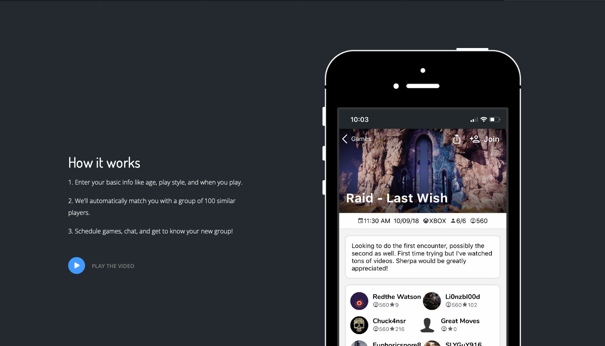

Algorithmically-Generated Communities: Case Study
Supervisor
Prof. Austin Toombs
C-CIL at Purdue University
Date
7/2019 - 8/2019
Research Description

This research project started from the question "Can a community formed by an algorithm thrive?". If it does, we were interested to see its impact.
the100.io is a gaming website that groups 100 people arbitrarily based on the users' demographic such as their age, marital status etc.
We case-studied this website and different groups of users that were sorted by the website's algorithm.
My role as a student researcher:
- Create qualitative themes for groups in the100.io and assign created themes to each group in order to find patterns
- Interview users of the website and generate qualitative themes
- Participate in writing the publication
Findings
Some of the findings include:
- The presence of shared identity development as a group
- Conversations on community atmosphere
- The willingness of a few group members to set up external tools
Publication
More information about this research can be found in this link:
Link to Publication
Afterthought
This research still remains as one of my favorite research experience. This research motivated to pursue study on algorithms, and believe in power of mathematical modeling.